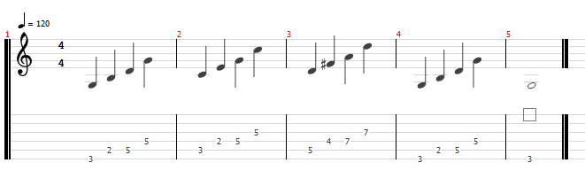

GROWL
I'd rather be playing guitar
FR
 EN
EN
ARPEGGIO, WHAT ARE YOU!?
Today I am talking about arpeggios (or arpeggi if you're a 16th century Italian). This is a great subject as many guitarists who start in rock will start with chords and then learn scales, but will generally gloss over the humble arp. Today I'll say what they are, why they are useful and why we should all practice them.
An arpeggio can be defined as the sequentially played members of a chord. They can be played in upward or downward order and can span one or more octaves. Guitarists can play them with alternating pick strokes or (if very well practised) in a single sweeping motion of the pick, called a "sweep arpeggio".
Here then is a simple progression of arpeggi in the key of G.
